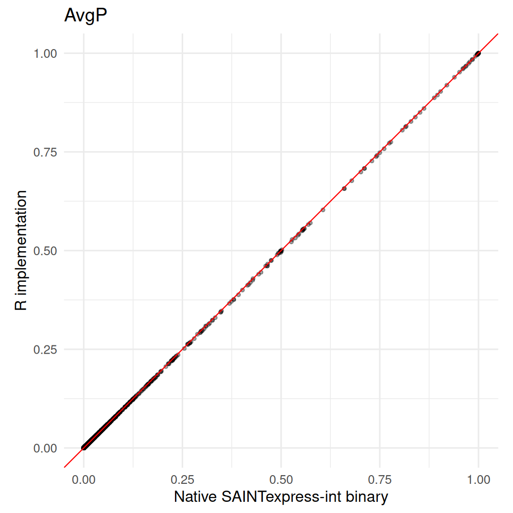
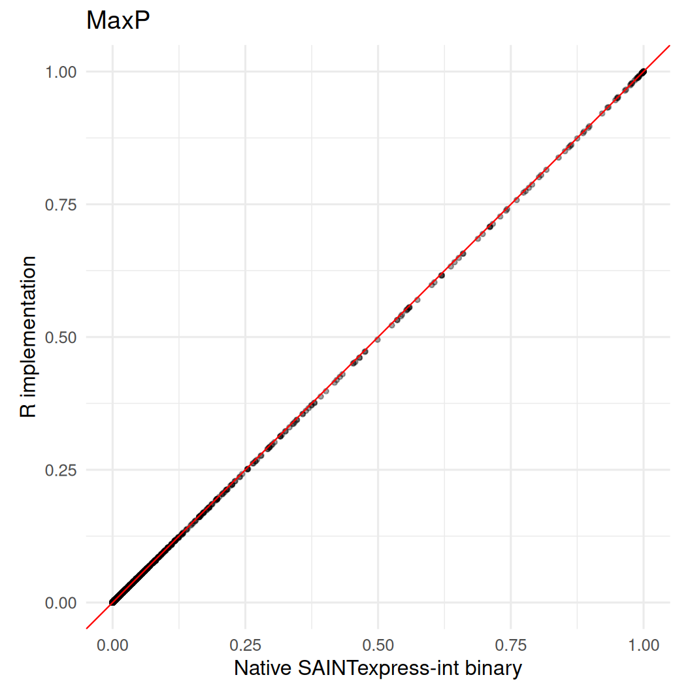
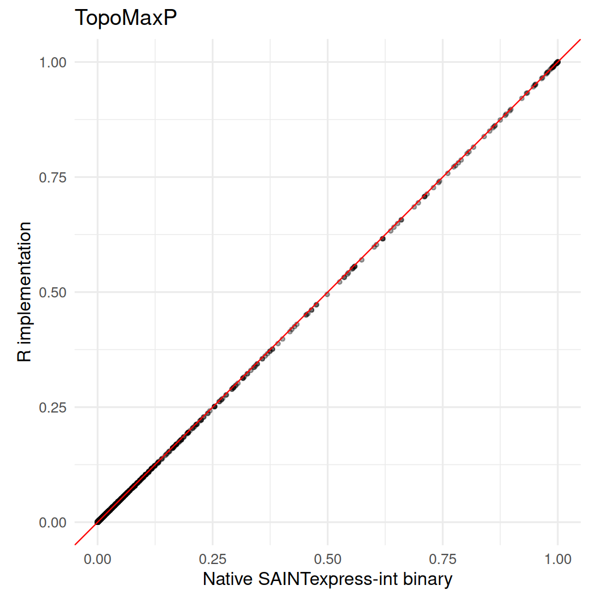
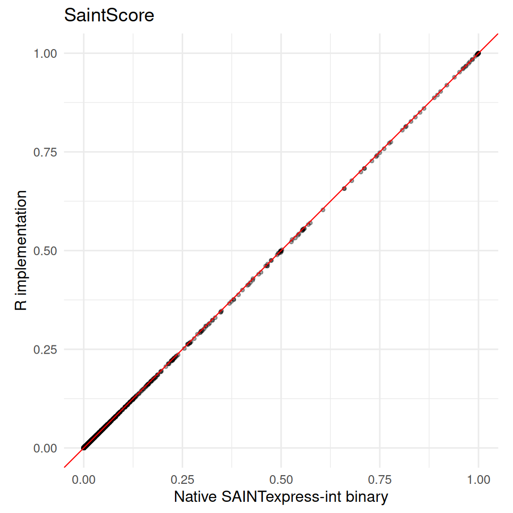
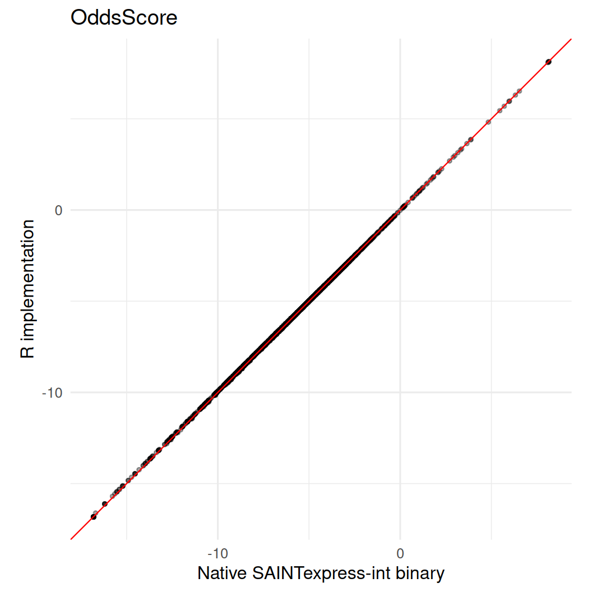
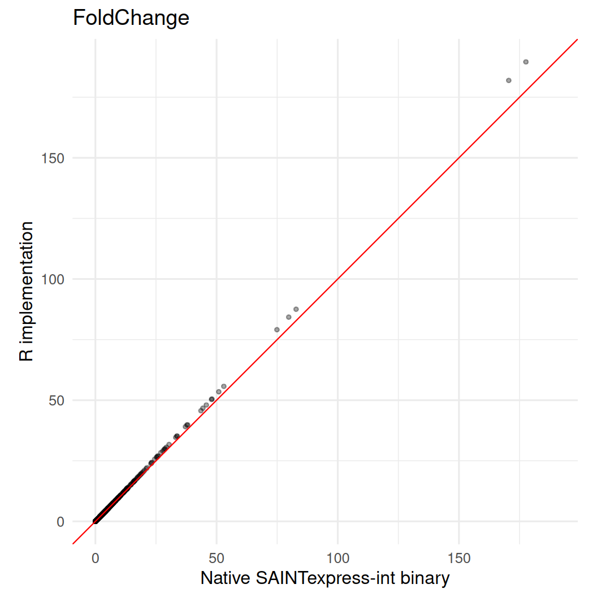
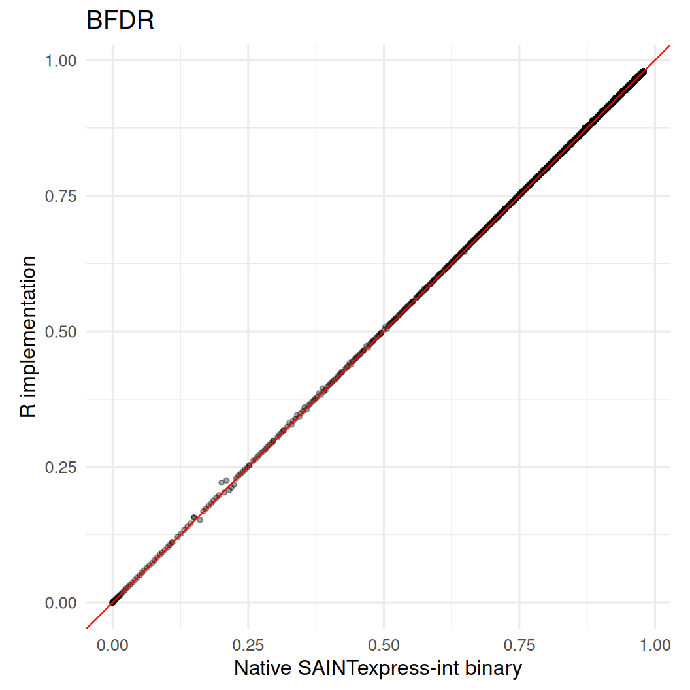

fixture_dir <- system.file(
"test/saintexpress-363-tip49-reference-int",
package = "prolfquasaint"
)
if (!nzchar(fixture_dir) && file.exists("inst/test/saintexpress-363-tip49-reference-int")) {
fixture_dir <- "inst/test/saintexpress-363-tip49-reference-int"
}
if (!nzchar(fixture_dir) && file.exists("../inst/test/saintexpress-363-tip49-reference-int")) {
fixture_dir <- "../inst/test/saintexpress-363-tip49-reference-int"
}
stopifnot(nzchar(fixture_dir))
si <- list(
inter = read.delim(
file.path(fixture_dir, "inter.dat"),
header = FALSE,
stringsAsFactors = FALSE,
check.names = FALSE
),
prey = read.delim(
file.path(fixture_dir, "prey.dat"),
header = FALSE,
stringsAsFactors = FALSE,
check.names = FALSE
),
bait = read.delim(
file.path(fixture_dir, "bait.dat"),
header = FALSE,
stringsAsFactors = FALSE,
check.names = FALSE
)
)
native_binary <- saintexpressbin::saintexpress_executable("int")
stopifnot(nzchar(native_binary))
native_binary
#> [1] "/home/runner/work/_temp/Library/saintexpressbin/bin/Linux64/SAINTexpress-int"
native_dir <- tempfile("saintexpress-native-")
dir.create(native_dir)
native <- prolfquasaint::runSaint(
si,
filedir = native_dir,
spc = FALSE,
engine = "binary",
use_docker = FALSE,
CLEANUP = TRUE
)$list
r_implementation <- prolfquasaint::runSaint(
si,
spc = FALSE,
engine = "r",
optimizer = "base"
)$list
key_cols <- c("Bait", "Prey", "PreyGene")
comparison <- merge(
native,
r_implementation,
by = key_cols,
suffixes = c("_binary", "_r")
)
numeric_cols <- c(
"AvgP",
"MaxP",
"TopoAvgP",
"TopoMaxP",
"SaintScore",
"OddsScore",
"FoldChange",
"BFDR"
)
summary_table <- data.frame(
metric = numeric_cols,
n = integer(length(numeric_cols)),
correlation = numeric(length(numeric_cols)),
mean_abs_delta = numeric(length(numeric_cols)),
max_abs_delta = numeric(length(numeric_cols))
)
for (i in seq_along(numeric_cols)) {
metric <- numeric_cols[[i]]
binary_values <- comparison[[paste0(metric, "_binary")]]
r_values <- comparison[[paste0(metric, "_r")]]
complete <- complete.cases(binary_values, r_values)
delta <- r_values[complete] - binary_values[complete]
summary_table$n[[i]] <- sum(complete)
summary_table$correlation[[i]] <- cor(binary_values[complete], r_values[complete])
summary_table$mean_abs_delta[[i]] <- mean(abs(delta))
summary_table$max_abs_delta[[i]] <- max(abs(delta))
}
summary_table
#> metric n correlation mean_abs_delta max_abs_delta
#> 1 AvgP 5521 0.9999919 0.0001206303 0.004
#> 2 MaxP 5521 0.9999918 0.0001606593 0.004
#> 3 TopoAvgP 5521 0.9999919 0.0001206303 0.004
#> 4 TopoMaxP 5521 0.9999918 0.0001606593 0.004
#> 5 SaintScore 5521 0.9999919 0.0001206303 0.004
#> 6 OddsScore 5521 0.9999870 0.0256140192 0.086
#> 7 FoldChange 5521 0.9999250 0.0336111212 11.946
#> 8 BFDR 5521 0.9999847 0.0003908712 0.020
for (metric in numeric_cols) {
binary_col <- paste0(metric, "_binary")
r_col <- paste0(metric, "_r")
plot_data <- comparison[complete.cases(comparison[c(binary_col, r_col)]), ]
range_values <- range(c(plot_data[[binary_col]], plot_data[[r_col]]), finite = TRUE)
cat("##", metric, "\n\n")
print(
ggplot2::ggplot(
plot_data,
ggplot2::aes(x = .data[[binary_col]], y = .data[[r_col]])
) +
ggplot2::geom_point(alpha = 0.35, size = 1) +
ggplot2::geom_abline(slope = 1, intercept = 0, color = "red", linewidth = 0.4) +
ggplot2::coord_equal(xlim = range_values, ylim = range_values) +
ggplot2::labs(
x = "Native SAINTexpress-int binary",
y = "R implementation",
title = metric
) +
ggplot2::theme_minimal(base_size = 12)
)
cat("\n\n")
}AvgP

MaxP

TopoAvgP
TopoMaxP

SaintScore

OddsScore

FoldChange

BFDR

Session information
sessionInfo()
#> R version 4.6.0 (2026-04-24)
#> Platform: x86_64-pc-linux-gnu
#> Running under: Ubuntu 24.04.4 LTS
#>
#> Matrix products: default
#> BLAS: /usr/lib/x86_64-linux-gnu/openblas-pthread/libblas.so.3
#> LAPACK: /usr/lib/x86_64-linux-gnu/openblas-pthread/libopenblasp-r0.3.26.so; LAPACK version 3.12.0
#>
#> locale:
#> [1] LC_CTYPE=C.UTF-8 LC_NUMERIC=C LC_TIME=C.UTF-8
#> [4] LC_COLLATE=C.UTF-8 LC_MONETARY=C.UTF-8 LC_MESSAGES=C.UTF-8
#> [7] LC_PAPER=C.UTF-8 LC_NAME=C LC_ADDRESS=C
#> [10] LC_TELEPHONE=C LC_MEASUREMENT=C.UTF-8 LC_IDENTIFICATION=C
#>
#> time zone: UTC
#> tzcode source: system (glibc)
#>
#> attached base packages:
#> [1] stats graphics grDevices utils datasets methods base
#>
#> loaded via a namespace (and not attached):
#> [1] tidyselect_1.2.1 viridisLite_0.4.3 dplyr_1.2.1
#> [4] farver_2.1.2 S7_0.2.2 prolfquasaint_0.1.5
#> [7] fastmap_1.2.0 lazyeval_0.2.3 digest_0.6.39
#> [10] rpart_4.1.27 prolfqua_1.6.2 lifecycle_1.0.5
#> [13] survival_3.8-6 statmod_1.5.2 magrittr_2.0.5
#> [16] compiler_4.6.0 rlang_1.2.0 tools_4.6.0
#> [19] yaml_2.3.12 data.table_1.18.4 knitr_1.51
#> [22] labeling_0.4.3 htmlwidgets_1.6.4 bit_4.6.0
#> [25] plyr_1.8.9 RColorBrewer_1.1-3 withr_3.0.2
#> [28] purrr_1.2.2 nnet_7.3-20 grid_4.6.0
#> [31] saintexpress_0.0.1 jomo_2.7-6 mice_3.19.0
#> [34] ggplot2_4.0.3 scales_1.4.0 iterators_1.0.14
#> [37] MASS_7.3-65 cli_3.6.6 crayon_1.5.3
#> [40] UpSetR_1.4.1 rmarkdown_2.31 reformulas_0.4.4
#> [43] generics_0.1.4 otel_0.2.0 httr_1.4.8
#> [46] tzdb_0.5.0 minqa_1.2.8 operator.tools_1.6.3.1
#> [49] splines_4.6.0 parallel_4.6.0 vctrs_0.7.3
#> [52] boot_1.3-32 glmnet_5.0 Matrix_1.7-5
#> [55] jsonlite_2.0.0 saintexpressbin_0.0.1 hms_1.1.4
#> [58] bit64_4.8.2 mitml_0.4-5 ggrepel_0.9.8
#> [61] foreach_1.5.2 limma_3.68.4 plotly_4.12.0
#> [64] tidyr_1.3.2 glue_1.8.1 nloptr_2.2.1
#> [67] pan_1.9 codetools_0.2-20 shape_1.4.6.1
#> [70] gtable_0.3.6 lme4_2.0-1 tibble_3.3.1
#> [73] pillar_1.11.1 htmltools_0.5.9 R6_2.6.1
#> [76] Rdpack_2.6.6 formula.tools_1.7.1 vroom_1.7.1
#> [79] evaluate_1.0.5 lattice_0.22-9 readr_2.2.0
#> [82] rbibutils_2.4.1 backports_1.5.1 pheatmap_1.0.13
#> [85] broom_1.0.13 Rcpp_1.1.1-1.1 gridExtra_2.3
#> [88] nlme_3.1-169 mgcv_1.9-4 logistf_1.26.1
#> [91] xfun_0.58 forcats_1.0.1 pkgconfig_2.0.3